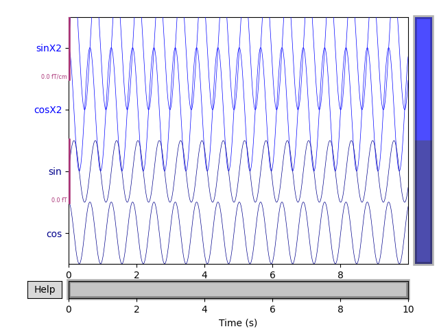

Note
Click here to download the full example code
Creating MNE objects from data arrays¶
In this simple example, the creation of MNE objects from numpy arrays is demonstrated.
# Author: Jaakko Leppakangas <jaeilepp@student.jyu.fi>
#
# License: BSD (3-clause)
import numpy as np
import mne
print(__doc__)
Create arbitrary data
sfreq = 1000 # Sampling frequency
times = np.arange(0, 10, 0.001) # Use 10000 samples (10s)
sin = np.sin(times * 10) # Multiplied by 10 for shorter cycles
cos = np.cos(times * 10)
sinX2 = sin * 2
cosX2 = cos * 2
# Numpy array of size 4 X 10000.
data = np.array([sin, cos, sinX2, cosX2])
# Definition of channel types and names.
ch_types = ['mag', 'mag', 'grad', 'grad']
ch_names = ['sin', 'cos', 'sinX2', 'cosX2']
Create an info object.
Create a dummy mne.io.RawArray object
raw = mne.io.RawArray(data, info)
# Scaling of the figure.
# For actual EEG/MEG data different scaling factors should be used.
scalings = {'mag': 2, 'grad': 2}
raw.plot(n_channels=4, scalings=scalings, title='Data from arrays',
show=True, block=True)
# It is also possible to auto-compute scalings
scalings = 'auto' # Could also pass a dictionary with some value == 'auto'
raw.plot(n_channels=4, scalings=scalings, title='Auto-scaled Data from arrays',
show=True, block=True)
- 
Out:
Creating RawArray with float64 data, n_channels=4, n_times=10000
Current compensation grade : 0
Range : 0 ... 9999 = 0.000 ... 9.999 secs
Ready.
<Figure size 640x480 with 4 Axes>
EpochsArray
event_id = 1 # This is used to identify the events.
# First column is for the sample number.
events = np.array([[200, 0, event_id],
[1200, 0, event_id],
[2000, 0, event_id]]) # List of three arbitrary events
# Here a data set of 700 ms epochs from 2 channels is
# created from sin and cos data.
# Any data in shape (n_epochs, n_channels, n_times) can be used.
epochs_data = np.array([[sin[:700], cos[:700]],
[sin[1000:1700], cos[1000:1700]],
[sin[1800:2500], cos[1800:2500]]])
ch_names = ['sin', 'cos']
ch_types = ['mag', 'mag']
info = mne.create_info(ch_names=ch_names, sfreq=sfreq, ch_types=ch_types)
epochs = mne.EpochsArray(epochs_data, info=info, events=events,
event_id={'arbitrary': 1})
picks = mne.pick_types(info, meg=True, eeg=False, misc=False)
epochs.plot(picks=picks, scalings='auto', show=True, block=True)

Out:
3 matching events found
No baseline correction applied
Not setting metadata
0 projection items activated
0 bad epochs dropped
<Figure size 512x384 with 5 Axes>
EvokedArray
nave = len(epochs_data) # Number of averaged epochs
evoked_data = np.mean(epochs_data, axis=0)
evokeds = mne.EvokedArray(evoked_data, info=info, tmin=-0.2,
comment='Arbitrary', nave=nave)
evokeds.plot(picks=picks, show=True, units={'mag': '-'},
titles={'mag': 'sin and cos averaged'}, time_unit='s')
Out:
<Figure size 640x300 with 1 Axes>
Create epochs by windowing the raw data.
# The events are spaced evenly every 1 second.
duration = 1.
# create a fixed size events array
# start=0 and stop=None by default
events = mne.make_fixed_length_events(raw, event_id, duration=duration)
print(events)
# for fixed size events no start time before and after event
tmin = 0.
tmax = 0.99 # inclusive tmax, 1 second epochs
# create :class:`Epochs <mne.Epochs>` object
epochs = mne.Epochs(raw, events=events, event_id=event_id, tmin=tmin,
tmax=tmax, baseline=None, verbose=True)
epochs.plot(scalings='auto', block=True)
Out:
[[ 0 0 1]
[1000 0 1]
[2000 0 1]
[3000 0 1]
[4000 0 1]
[5000 0 1]
[6000 0 1]
[7000 0 1]
[8000 0 1]
[9000 0 1]]
10 matching events found
No baseline correction applied
Not setting metadata
0 projection items activated
Loading data for 10 events and 991 original time points ...
0 bad epochs dropped
Loading data for 10 events and 991 original time points ...
Loading data for 10 events and 991 original time points ...
<Figure size 512x384 with 5 Axes>
Create overlapping epochs using mne.make_fixed_length_events() (50 %
overlap). This also roughly doubles the amount of events compared to the
previous event list.
Out:
[[ 0 0 1]
[ 500 0 1]
[1000 0 1]
[1500 0 1]
[2000 0 1]
[2500 0 1]
[3000 0 1]
[3500 0 1]
[4000 0 1]
[4500 0 1]
[5000 0 1]
[5500 0 1]
[6000 0 1]
[6500 0 1]
[7000 0 1]
[7500 0 1]
[8000 0 1]
[8500 0 1]
[9000 0 1]
[9500 0 1]]
20 matching events found
No baseline correction applied
Not setting metadata
0 projection items activated
Loading data for 20 events and 991 original time points ...
1 bad epochs dropped
Loading data for 19 events and 991 original time points ...
Loading data for 19 events and 991 original time points ...
<Figure size 512x384 with 5 Axes>
Total running time of the script: ( 0 minutes 2.894 seconds)